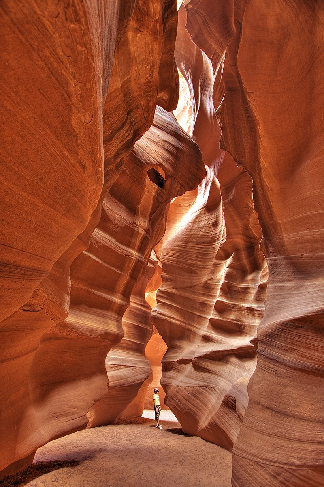

Начало
Каньона на антилопата(САЩ)
Каньона на антилопата(САЩ)
Тунелът на любовта(Украйна)
Кривата гора
(Полша)
Образувани са по естествен път от водата и вятъра вследствие ерозия на
пясъчници, главно в резултат на сезонни наводнения в продължение на
столетия. Каньонът е популярна туристическа забележителност и чест
обект на пейзажна фотография[2]. Най-доброто време за посещение е
пролет и есен, когато светлината прониква до дъното на каньона и създава
красивите цветове.
Каньонът на антилопата (на английски: Antelope Canyon) е тесен каньон край град Пейдж[1] в щата Аризона, Съединените американски щати, в близост до границата с Юта, на 240 km от Гранд Каньон. Разположен е на територията на резерват на индианците навахи. Наименован е така заради оранжевите оттенъци, които напомнят цвета на кожата на антилопа. Съществуват два каньона – горен и долен (Upper Antelope Canyon, Lower Antelope Canyon), които са любимо място на фотографи от цял свят заради причудливите форми, образувани от светлосенките.

Полезни източници:
www.peika.bg
www.w3schools.com
Google.com
Изготвил:
Беркджан Хълми